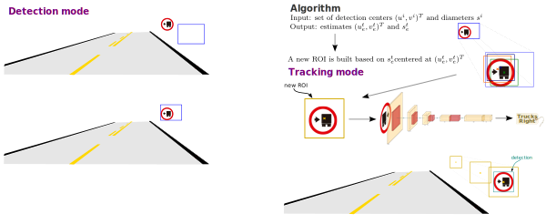

Fast Traffic Sign Detection for Two-Way Roads using Detachable Onboard Cameras
Maurı́cio B. de Paula$^\ast$ and Cláudio R. Jung$^\dagger$
$^\ast$Mathematics and Statistics Department, Federal University of Pelotas
$^\dagger$Institute of Informatics, Federal University of Rio Grande do Sul
Outline
- Motivation
- Related work
- Proposed approach
- Experimental results
- Conclusion
Motivation
- Approximately 1.35 million people die each year due to road traffic injuries worldwide1.
- Brazil has one of the highest rates of road traffic fatalities in the world.
- In 2022, there were approximately 20,852 road traffic deaths2.
- Campaigns have been carried out to reduce traffic injuries and deaths.
- Many vehicles are already equipped with ADAS, the aim of which is to reduce traffic injuries and increase traffic safety.
1 World Health Organization (2018). Global status report on road safety 2018. Available at: https://www.who.int/publications/i/item/9789241565684.
2Registro Nacional de Acidentes e Estatísticas de Trânsito. Avaiable at: https://www.gov.br/transportes/pt-br/assuntos/transito/conteudo-Senatran/registro-nacional-de-acidentes-e-estatisticas-de-transito
Related work
- Several TSD approaches are based on direct adaptations of generic-purpose object detectors.
- Runtime is still a problem when using low-power hardware.
- Most TSD approaches take as input the full image captured.
- The methods try to detect all traffic signs, without any previous knowledge of location or scale.
- Accuracy vs. Computational Demands
The proposed approach
- Main Contribution
Definition of the ROIs Lightweight CNN for TSD Detection and Tracking mode
Main Contribution
Define a small region of interest from the full frame by using the typical vertical traffic sign positions on rural roads, enabling the development of a low-cost TSD approach.
The proposed approach
Main Contribution - Definition of the ROIs
Lightweight CNN for TSD Detection and Tracking mode
Definition of the ROIs
Definition of the ROIs

Definition of the ROIs

Rectangular region \( r \) in WCS: \( \mathbf{w}_z = \left( p_h + \frac{p_d}{2}, \delta_y, \delta_z \right)^T \)
- $p_d$ and $p_h$ are the expected diameter and height.
- $\delta_y$ is the approximate lateral distance (vehicle location $\to$ center of the sign)
- $\delta_z$ is the distance from the ROI to the camera.
The proposed approach
Main Contribution Definition of the ROIs - Lightweight CNN for TSD
Detection and Tracking mode
Lightweight CNN for TSD

| Network | Size |
|---|---|
| Proposed network | 394Kb |
| Mobilenet-v2 | 14Mb |
| YOLOv4-tiny | 6Mb |

The proposed approach
Main Contribution Definition of the ROIs Lightweight CNN for TSD - Detection and Tracking mode
Detection and tracking mode
Detection and tracking mode
Experimental results
- Dataset
Training details Quantitative Evaluation
Our Dataset
Training set
| Traffic sign | #images |
|---|---|
| No overtaking | 939 |
| Left curve | 608 |
| Right curve | 744 |
| 60 km/h | 189 |
| 80 km/h | 195 |
| Trucks right | 167 |
| Bridge ahead | 102 |
Total of 2,944 images
Testing set
- Eleven (11) full HD videos
- Recorded with different placement settings.
- Extrinsic params. different for each video.
- Instrisic params. obteained offline.
Training details
- We cropped the training images around the annotade signs, randomly generating regions 3 to 5 times larger than the traffic sing.
- We used photometric augmentation and 2 different kernels to emulate defocus/motion blur.
Quantitative Evaluation
Conclusion
- Presented a framework for Brazilian TSD with flexible camera setup.
- Explored a calibrated camera to reduce the search area.
- Reduced the background complexity.
- The relative size of the TS presented small variations.
- Allowed the use of lightweight CNNs.